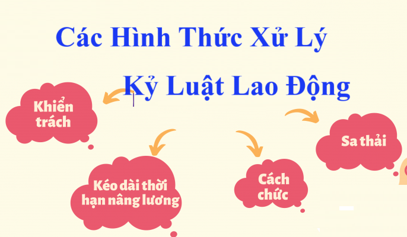

Các hình thức xử lý kỷ luật lao động hiện nay đang được quy định tại điều 124 của Bộ luật Lao động số 45/2019/QH14
Cụ thể, các hình thức xử lý kỷ luật lao động bao gồm:
1. Khiển trách.

2. Kéo dài thời hạn nâng lương không quá 06 tháng.
3. Cách chức.
4. Sa thải.
Áp dụng hình thức xử lý kỷ luật sa thải:
Theo điều 125 của Bộ luật Lao động số 45/2019/QH14 thì:
Hình thức xử lý kỷ luật sa thải được người sử dụng lao động áp dụng trong trường hợp sau đây:
1. Người lao động có hành vi trộm cắp, tham ô, đánh bạc, cố ý gây thương tích, sử dụng ma túy tại nơi làm việc;
2. Người lao động có hành vi tiết lộ bí mật kinh doanh, bí mật công nghệ, xâm phạm quyền sở hữu trí tuệ của người sử dụng lao động, có hành vi gây thiệt hại nghiêm trọng hoặc đe dọa gây thiệt hại đặc biệt nghiêm trọng về tài sản, lợi ích của người sử dụng lao động hoặc quấy rối tình dục tại nơi làm việc được quy định trong nội quy lao động;
3. Người lao động bị xử lý kỷ luật kéo dài thời hạn nâng lương hoặc cách chức mà tái phạm trong thời gian chưa xóa kỷ luật. Tái phạm là trường hợp người lao động lặp lại hành vi vi phạm đã bị xử lý kỷ luật mà chưa được xóa kỷ luật theo quy định tại Điều 126 của Bộ luật này;
4. Người lao động tự ý bỏ việc 05 ngày cộng dồn trong thời hạn 30 ngày hoặc 20 ngày cộng dồn trong thời hạn 365 ngày tính từ ngày đầu tiên tự ý bỏ việc mà không có lý do chính đáng.
Trường hợp được coi là có lý do chính đáng bao gồm thiên tai, hỏa hoạn, bản thân, thân nhân bị ốm có xác nhận của cơ sở khám bệnh, chữa bệnh có thẩm quyền và trường hợp khác được quy định trong nội quy lao động.
Xóa kỷ luật, giảm thời hạn chấp hành kỷ luật lao động
Theo điều 126 của Bộ luật Lao động số 45/2019/QH14 thì:
1. Người lao động bị khiển trách sau 03 tháng hoặc bị xử lý kỷ luật kéo dài thời hạn nâng lương sau 06 tháng hoặc bị xử lý kỷ luật cách chức sau 03 năm kể từ ngày bị xử lý, nếu không tiếp tục vi phạm kỷ luật lao động thì đương nhiên được xóa kỷ luật.
2. Người lao động bị xử lý kỷ luật kéo dài thời hạn nâng lương sau khi chấp hành được một nửa thời hạn nếu sửa chữa tiến bộ thì có thể được người sử dụng lao động xét giảm thời hạn.
Các hành vi bị nghiêm cấm khi xử lý kỷ luật lao động
Theo điều 127 của Bộ luật Lao động số 45/2019/QH14 thì:
1. Xâm phạm sức khỏe, danh dự, tính mạng, uy tín, nhân phẩm của người lao động.
2. Phạt tiền, cắt lương thay việc xử lý kỷ luật lao động.
3. Xử lý kỷ luật lao động đối với người lao động có hành vi vi phạm không được quy định trong nội quy lao động hoặc không thỏa thuận trong hợp đồng lao động đã giao kết hoặc pháp luật về lao động không có quy định.
Tạm đình chỉ công việc
Theo điều 128 của Bộ luật Lao động số 45/2019/QH14 thì:
1. Người sử dụng lao động có quyền tạm đình chỉ công việc của người lao động khi vụ việc vi phạm có những tình tiết phức tạp nếu xét thấy để người lao động tiếp tục làm việc sẽ gây khó khăn cho việc xác minh. Việc tạm đình chỉ công việc của người lao động chỉ được thực hiện sau khi tham khảo ý kiến của tổ chức đại diện người lao động tại cơ sở mà người lao động đang bị xem xét tạm đình chỉ công việc là thành viên.
2. Thời hạn tạm đình chỉ công việc không được quá 15 ngày, trường hợp đặc biệt không được quá 90 ngày. Trong thời gian bị tạm đình chỉ công việc, người lao động được tạm ứng 50% tiền lương trước khi bị đình chỉ công việc.
Hết thời hạn tạm đình chỉ công việc, người sử dụng lao động phải nhận người lao động trở lại làm việc.
3. Trường hợp người lao động bị xử lý kỷ luật lao động, người lao động cũng không phải trả lại số tiền lương đã tạm ứng.
4. Trường hợp người lao động không bị xử lý kỷ luật lao động thì được người sử dụng lao động trả đủ tiền lương cho thời gian bị tạm đình chỉ công việc.
Thời hiệu xử lý kỷ luật lao động
Theo điều 123 của Bộ luật Lao động số 45/2019/QH14 thì:
Theo điều 123 của Bộ luật Lao động số 45/2019/QH14 thì:
1. Thời hiệu xử lý kỷ luật lao động là 06 tháng kể từ ngày xảy ra hành vi vi phạm; trường hợp hành vi vi phạm liên quan trực tiếp đến tài chính, tài sản, tiết lộ bí mật công nghệ, bí mật kinh doanh của người sử dụng lao động thì thời hiệu xử lý kỷ luật lao động là 12 tháng.
2. Khi hết thời gian quy định tại khoản 4 Điều 122 của Bộ luật này, nếu hết thời hiệu hoặc còn thời hiệu nhưng không đủ 60 ngày thì được kéo dài thời hiệu để xử lý kỷ luật lao động nhưng không quá 60 ngày kể từ ngày hết thời gian nêu trên.
3. Người sử dụng lao động phải ban hành quyết định xử lý kỷ luật lao động trong thời hạn quy định tại khoản 1 và khoản 2 Điều này.
Công ty đào tạo Kế Toán Diệu Tâm mời các bạn tham khảo thêm: